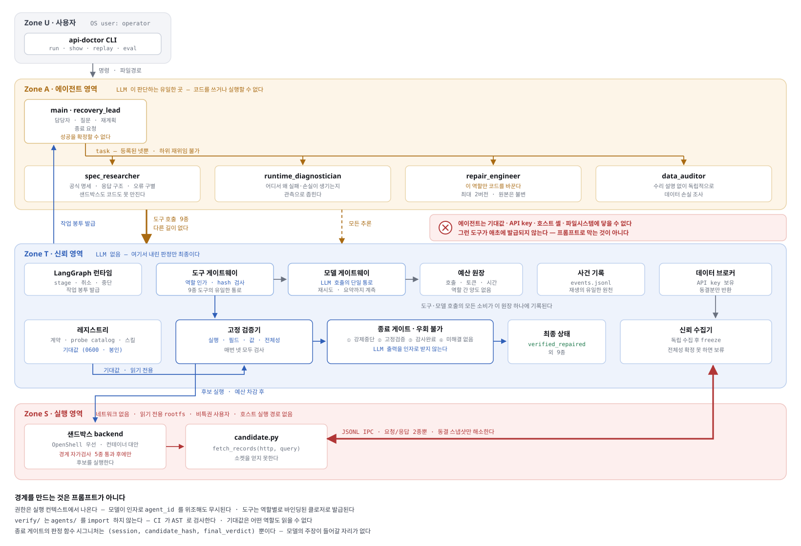
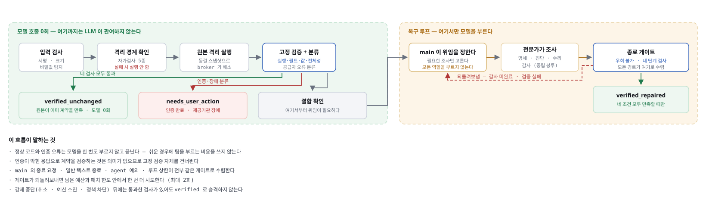
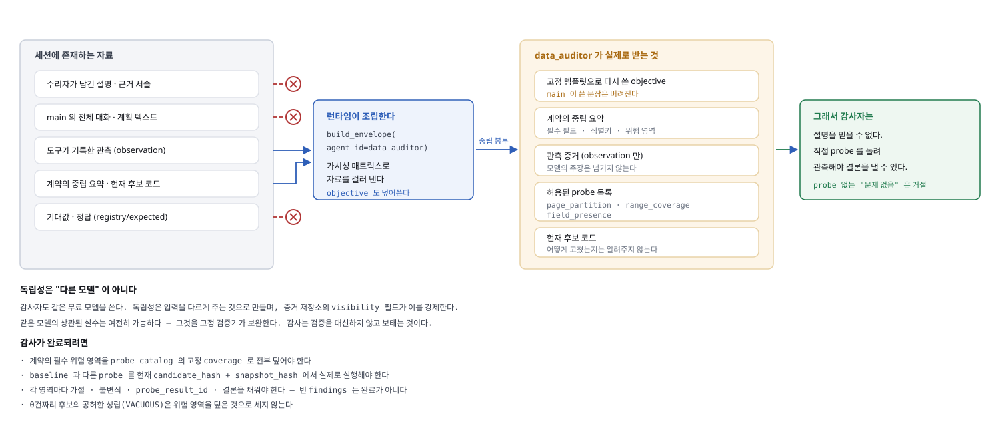
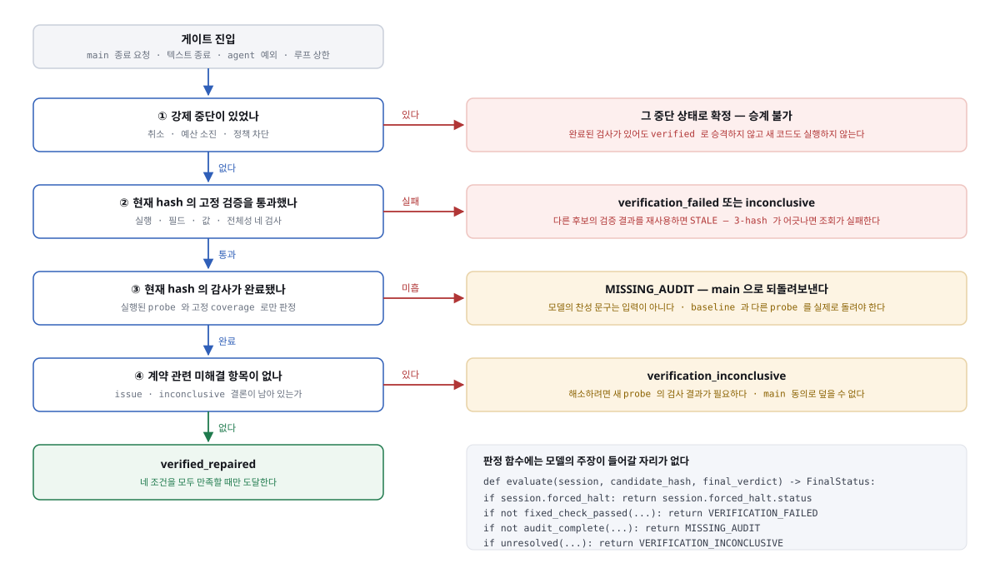

깨진 공공 API 연동 코드를 고치고,
그게 진짜 고쳐졌는지 LLM 없이 검증하는 에이전트
공공데이터 API를 붙여본 사람은 이 상황을 압니다.
200 OK 종료 코드 0 예외 없음 그런데 데이터가 이상하다
페이지 경계에서 레코드가 새고, 필드가 조용히 비고, 요청한 범위와 받은 범위가 어긋납니다. 에러가 없으니 스택트레이스도 없고 어디를 봐야 할지 단서가 없습니다. 결국 응답을 눈으로 훑으며 며칠을 씁니다.
여기에 LLM을 붙이면 문제가 더 커집니다. 모델이 "고쳤습니다"라고 말하는 순간 그 말이 곧 결론이 되기 때문입니다. 고친 쪽이 채점까지 하는 구조에서는 틀린 수리가 통과합니다.
고정 검증기는 네 가지를 봅니다. 실행, 필드, 값, 전체성입니다. 앞의 셋이 전부 통과해도 전체성 검사가 잡아냅니다. 이 판정에 LLM은 관여하지 않습니다.
$ api-doctor run -d seoul_library -c examples/connector_partial.py ✓ execution 후보가 4건을 반환했습니다. ✓ fields 4건에서 필수 필드가 보존되었습니다. ✓ values 2개 값 규칙을 만족합니다. ✗ completeness 누락 1건; 건수 4 != 기대 5
Zone A는 Zone T의 검증기와 기대값에 코드 수준에서 닿을 수 없습니다. 프롬프트로 부탁한 것이 아니라 import 경계로 막았고, CI가 AST를 파싱해서 매번 검사합니다.
# tests/test_import_boundaries.py (전 7건 중 4건)
FORBIDDEN = [
("verify", ("agents","tools","model"), "고정 검증기는 모델 판단과 분리된다"),
("sandbox", ("agents","model","verify"), "Zone S 는 Zone A 를 모른다"),
("agents", ("evaluation",), "에이전트가 평가용 비공개 기대값에 닿으면 안 된다"),
("runtime", ("evaluation",), "런타임이 평가 세트를 알면 안 된다"),
]

main / recovery_lead 위임과 종료 요청만 한다. 코드를 쓰거나 실행하지 못한다. ├─ spec_researcher 공식 명세의 응답 구조, 조회 규칙, 오류 구별 ├─ runtime_diagnostician 어디서 왜 손실이 생기는지 관측 ├─ repair_engineer 최소 패치 (이 역할만 코드를 바꾼다) └─ data_auditor 수리자의 설명 없이 독립적으로 손실 조사
권한은 프롬프트에 적힌 부탁이 아니라 실행 컨텍스트에 바인딩된 클로저입니다.
모델이 agent_id를 위조해도 무시됩니다. 위험 도구 누수 없음,
하위 재위임 가능 역할 없음을 실측으로 확인했습니다.
| 역할 | 실제 바인딩된 도구 |
|---|---|
| main | get_budget, read_evidence, read_file, request_finish, request_stop, task |
| spec_researcher | get_budget, read_evidence, search_spec |
| runtime_diagnostician | get_budget, inspect_code, inspect_trace, read_evidence, run_probe |
| repair_engineer | get_budget, inspect_code, read_evidence, run_probe, submit_patch |
| data_auditor | get_budget, inspect_code, inspect_trace, read_evidence, run_probe |

원본이 이미 계약을 만족하면 verified_unchanged로 끝납니다. 인증이
만료됐거나 제공기관이 죽었으면 needs_user_action으로 끝납니다.
둘 다 모델을 한 번도 부르지 않습니다. 인증이 막힌 응답으로 계약을 검증하는 것은
의미가 없으므로 고정 검증 자체를 건너뜁니다.
후보 코드는 네트워크가 끊긴 컨테이너에서만 돕니다.
--network none --read-only --cap-drop ALL --security-opt no-new-privileges --user 65534:65534 --pids-limit 32 --memory 512m --cpus 1 --tmpfs /tmp
경계를 믿지 않고 매번 증명합니다. 실행 직전에 자가검사 5종을 돌리고, 하나라도 차단되지 않으면 후보를 실행하지 않습니다.
| 자가검사 | 무엇을 시도하나 | 결과 |
|---|---|---|
| network_egress | HTTP 송신, 직접 소켓, DNS 조회 | 차단 |
| write_outside_workdir | 작업 디렉터리 밖 쓰기 | 차단 |
| read_host_secret | 호스트 비밀 읽기, 환경변수 카나리아 | 차단 |
| process_limit | 프로세스 폭증 | 차단 |
| privilege_escalation | 권한 상승 | 차단 |
카나리아는 호스트의 docker 프로세스에만 존재하는 환경변수입니다. 컨테이너 안에서
보이면 환경변수가 경계를 넘은 것입니다. API 키는 후보 코드에 {KEY}
자리표시자로만 전달되고, 실제 키는 Zone T의 브로커만 가집니다.

감사자에게 수리자의 설명을 주면 감사는 그 설명을 검토하는 일이 됩니다. 그러면 설명이 그럴듯할수록 통과합니다. 런타임이 중립 작업 봉투를 새로 조립해서 관측 증거만 넘깁니다. 수리자의 서술도, main의 대화도, 기대값도 넘어가지 않습니다.
그래서 감사자는 믿을 것이 없습니다. 직접 probe를 돌려 관측해야 결론을 낼 수 있습니다.
visibility 필드가 이를 강제합니다.
같은 모델의 상관된 실수는 여전히 가능하며, 그것은 고정 검증기가 보완합니다.
감사는 검증을 대신하지 않고 보탭니다.

def evaluate(session, *, candidate_hash, final_verdict) -> GateDecision:
"""최종 판정. 순서가 곧 우선순위다."""
# ① 강제 중단이 있었나 (취소, 예산 소진, 정책 차단)
# ② 현재 hash 의 고정 검증을 통과했나
# ③ 현재 hash 에 대한 감사가 완료됐나
# ④ 계약 관련 미해결 근거가 없나
main의 종료 요청, 일반 텍스트 종료, 에이전트 예외, 루프 상한이 전부 같은 게이트로 수렴합니다. "끝났다"고 말할 수 있는 경로가 하나뿐입니다.
강제 중단 뒤에는 통과한 검사가 있어도 승격하지 않습니다. 취소나 예산 소진으로 끊긴 실행은 "검증됐다"고 부를 수 없기 때문입니다.
candidate_hash와
snapshot_hash에서 실제로 실행해야 합니다probe_result_id, 결론을 채워야 합니다.
빈 findings는 완료가 아닙니다| 무엇 | 언제 | |
|---|---|---|
| 제품의 고정 검증 | registry/*/expected/ | 수리 중에 결과를 돌려줍니다. 모델이 기준을 바꿀 수 없습니다 |
| 평가용 비공개 세트 | eval/hidden.json | 에이전트에게 숨겼다가 최종 패치 확정 후에만 실행합니다 |
비공개 세트는 계약의 주 query와 다른 범위를 씁니다. 팀이 그 범위에 맞춰 최적화할 방법이 없습니다. 평가 실패를 같은 작업의 재수리로 돌려보내지도 않습니다.
| 항목 | 결과 | 비고 |
|---|---|---|
| 결함 탐지 평가 | 18/18 | 거짓 성공 0건 |
| 격리 경계 자가검사 | 5/5 | 환경변수 카나리아 포함 |
| 테스트 | 183 통과 | 구역 간 import 경계는 CI가 AST로 강제 |
한 케이스가 제품에서는 실패인데 비공개 검사는 통과했습니다. 추적해보니 같은 후보가 세 번 정상 실행된 뒤 가장 중요한 종료 검증만 실패하고 있었습니다.
sandbox_run hash=f509a2b6 returned=5 정상 sandbox_run hash=f509a2b6 returned=5 정상 sandbox_run hash=f509a2b6 returned=5 정상 sandbox_run hash=f509a2b6 returned=None 종료 검증만 실패 브로커 호출: 20 / 20
원인은 동결된 스냅샷 읽기까지 공식 API 호출 상한에 넣은 것이었습니다. 이것은 거짓 실패를 만드는 종류의 버그입니다. 거짓 성공과 달리 조용히 지나가고, 비공개 검사가 없었으면 "복구 실패"로 집계됐을 것입니다. 평가를 만든 이유가 이것입니다.
| 항목 | 내용 |
|---|---|
| 모델 | nvidia/nemotron-3-super-120b-a12b (reasoning) |
| 폴백 | nvidia/nemotron-3-nano-omni-30b-a3b-reasoning |
| 엔드포인트 | NVIDIA NIM · integrate.api.nvidia.com/v1 (OpenAI 호환) |
| 발급 | build.nvidia.com 무료 등급 |
| 프로파일링 | NeMo Agent Toolkit 형식의 역할별 구간 리포트 |
reasoning 모델이라 추론 토큰이 completion_tokens에 함께 잡힙니다.
사소한 JSON 한 줄에도 출력 258토큰이 나갔습니다. 그래서 역할별 출력 상한을 따로
잡았습니다 (수리자 12288, 나머지 3072).
deepagents 0.7.19가 기본입니다. LangChain의 wrap_tool_call 미들웨어
훅에서 task 위임을 가로채 예산과 권한과 중복 위임을 검사합니다.
기본 파일시스템 백엔드가 호스트에 닿지 않는 StateBackend임을 확인하고
FilesystemMiddleware(tools=["read_file"])로 쓰기 도구를 제거했습니다.
자동 요약 미들웨어는 껐습니다. main의 모델 예산을 몰래 먹고 있었습니다.
Python 3.12, uv, Typer, Rich, Pydantic, httpx, pytest, Docker
모델별로 8회씩 측정했습니다.
| 모델 | 성공 | 실패 내역 |
|---|---|---|
| nemotron-3-super-120b-a12b (주) | 1/8 | 429×4, 503×3 |
| nemotron-3-nano-omni-30b-a3b-reasoning | 4/8 | 503×4 |
| llama-3.1-nemotron-70b-instruct | 0/8 | 404 |
| llama-3.1-nemotron-ultra-253b-v1 | 0/8 | 404 |
| llama-3.1-nemotron-51b-instruct | 0/8 | 404 |
/v1/chat/completions로는 전부 404였습니다.
두 실패를 구분해서 다르게 대응합니다.
| 코드 | 정체 | 대응 |
|---|---|---|
| 429 | 우리가 너무 빨리 불렀습니다 | 맞고 물러서는 대신 호출 사이에 최소 간격을 둡니다. Retry-After가 오면 그쪽을 따릅니다 |
| 503 | 공급자 과부하입니다 | 0.1초 만에 즉시 거절되므로 기다려도 줄지 않습니다. 폴백 모델로 즉시 갈아탑니다 |
폴백 적용 전 1/8에서 적용 후 10/10이 됐습니다 (주 모델 7회, 폴백 3회). 어떤 모델이 응답했는지는 호출마다 기록합니다. 그러지 않으면 "성공률이 올랐다"는 말이 어느 모델의 성적인지 알 수 없어 측정이 거짓말이 됩니다.
틀린 판단을 지우지 않고 기록으로 남겼습니다.
호스트 파일시스템에 닿는다고 판단해서 배제했는데, 근거 두 개가 다 틀렸습니다.
기본 백엔드는 호스트를 건드리지 않는 StateBackend이고,
FilesystemMiddleware(tools=[...])는 도구를 완전히 제거합니다.
HarnessProfile.excluded_tools만 시험해보고 내린 결론이었습니다.
문서를 조용히 덮어쓰지 않고 철회 기록으로 남겼습니다.
역할별 호출 상한이 강제되지 않는 것처럼 보였습니다. 한 역할이 10회, 다른 역할이 15회를 쓴 사건이 남아 있었습니다. 실제로는 그것이 시도 수였고 공급자 실패는 환불되므로 과금된 호출은 1회와 4회였습니다. 환불이 있는 원장에서는 사건 수와 과금 수를 섞어 세면 안 됩니다.
결함 탐지를 최종 상태로 판정했는데, 키가 없으면 모든 결함 케이스가
needs_user_action으로 끝납니다. "결함을 탐지했는지"가 아니라 "키가
없는지"를 재고 있었습니다. baseline 판정으로 바꿨습니다.
호스트 비밀 읽기 시험이 PermissionError로 죽어서 실패로 잡혔는데,
사실은 샌드박스가 가정보다 더 엄격했던 것입니다. Path.exists()가
EACCES를 삼키지 않습니다. "실제로 읽히는가"를 묻도록 고치고 환경변수 카나리아를
추가했습니다.
deepagents는 기본 스택에 요약 미들웨어를 넣고 main의 모델로 요약을 돌립니다.
원장에는 main 호출로 잡히지만 용도가 구분되지 않습니다. 위임 2건에 main 호출 8회가
나가던 원인이었습니다. 끄자마자 첫 verified_repaired에 도달했습니다.